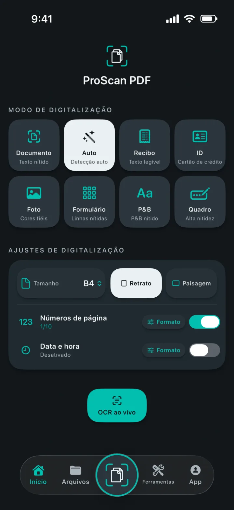
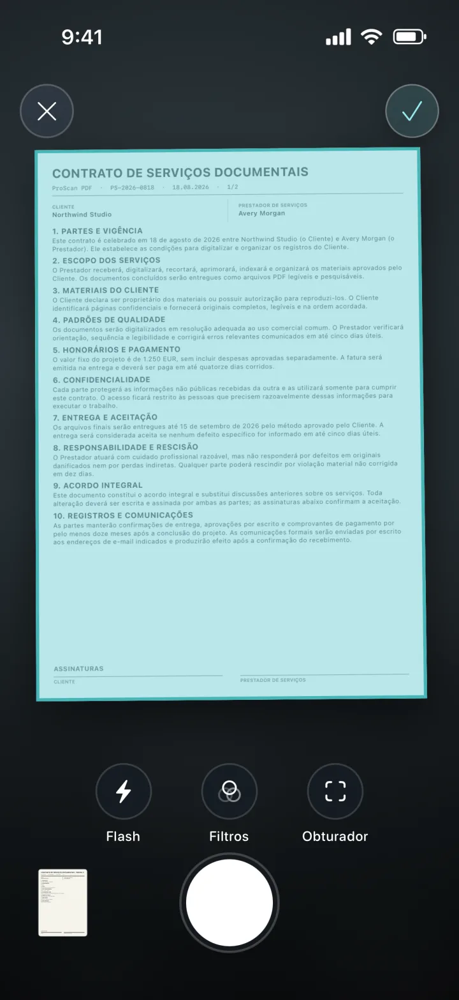
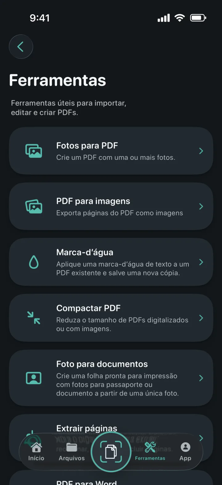
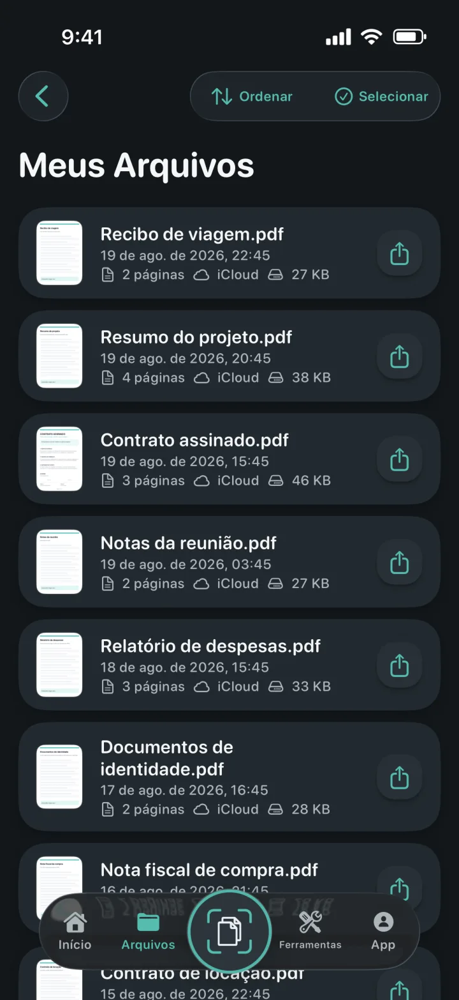
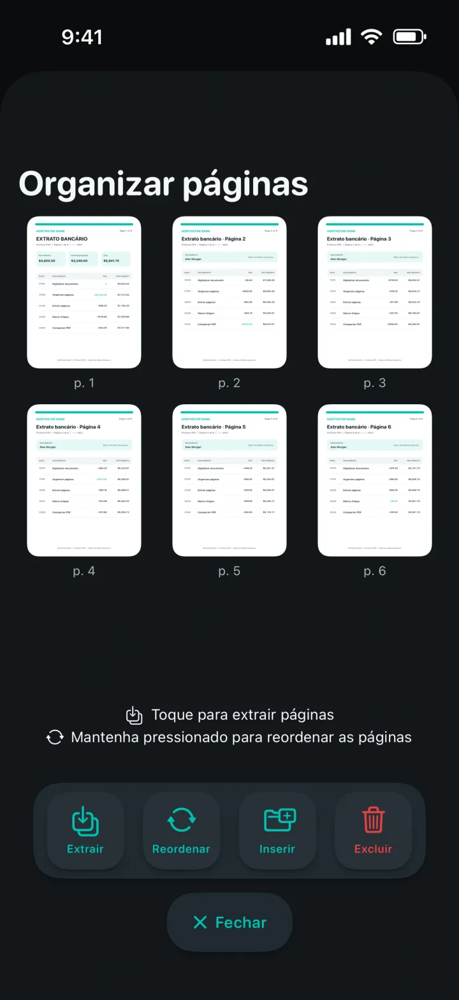
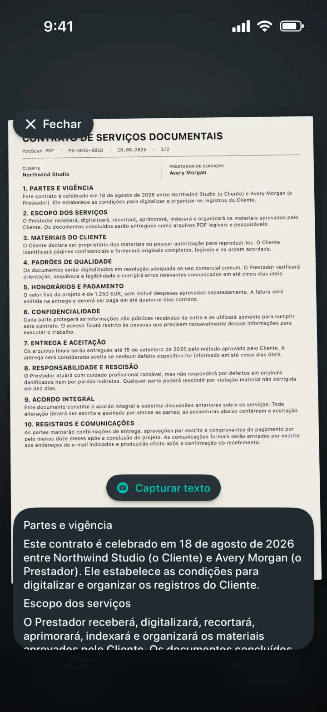

Fotos para PDF
Transforme uma ou mais fotos em um PDF bem acabado.
Um scanner que entende cada página
Transforme documentos, recibos, documentos de identidade, anotações e fotos em PDFs bem acabados. Depois edite, assine, proteja e compartilhe sem anúncios nem marcas-d’água.

Um scanner que entende cada página
Escolha o modo certo, enquadre a página e deixe o scanner de documentos da Apple cuidar da captura. Defina tamanho, orientação, números de página e data e hora antes de começar.

Todas as ferramentas PDF em um só lugar
Importe, converta, edite e crie PDFs em um único espaço de trabalho.

Transforme uma ou mais fotos em um PDF bem acabado.
Exporte cada página como imagem para salvar ou compartilhar.
Adicione uma marca-d’água colorida a uma nova cópia do PDF.
Reduza o tamanho de PDFs digitalizados ou baseados em imagens.
Recorte, verifique e exporte tamanhos exatos ou folhas prontas para impressão.
Extraia, reorganize, insira ou exclua páginas PDF.
Crie arquivos Word editáveis, preservando o layout sempre que possível.
Crie cópias pesquisáveis e encontre texto no visualizador.


Documentos sempre organizados
Cópias locais deixam a biblioteca rápida para abrir. O backup privado no iCloud ajuda a manter seus documentos disponíveis ao trocar de aparelho Apple.
Privacidade desde o projeto
Digitalização, OCR e processamento de PDF acontecem localmente no seu aparelho. O ProScan PDF não envia seus documentos para servidores próprios.
Leia a Política de PrivacidadeOCR e documentos pesquisáveis
Capture texto ao vivo, extraia conteúdo editável ou crie cópias PDF pesquisáveis. Tudo é processado no seu iPhone ou iPad.

Feito para você
Cada tema transforma a interface do app e inclui um ícone de Tela de Início combinando.
Turquesa scanner e branco papel sobre grafite.
Ciano elétrico e violeta sobre preto profundo.
Controles azuis limpos sobre uma superfície clara.
Coral, violeta e menta sobre carvão suave.
Champanhe e rosa suave sobre azul-noite refinado.
Prata fria e dourado polido sobre grafite.
Creme quente e terracota sobre verde-floresta profundo.
Disponível em inglês, alemão, espanhol, francês, italiano, holandês, polonês, português do Brasil, português de Portugal, turco, chinês simplificado, japonês, coreano e hindi.
Dúvidas respondidas
Informações claras sobre privacidade, armazenamento e tudo o que você pode fazer com o ProScan PDF.
Não. O ProScan PDF não exibe anúncios nem adiciona marcas-d’água aos documentos digitalizados.
As principais ferramentas de digitalização, OCR e PDF funcionam no seu aparelho e podem ser usadas offline. Backup no iCloud e compartilhamento exigem conexão.
Os documentos ficam na biblioteca local do app para acesso rápido. Quando o iCloud está disponível, cópias privadas podem ser armazenadas na sua conta iCloud.
Fotos para PDF, PDF para imagens, marcas-d’água, compactação, fotos para documentos, extração e organização de páginas, PDF para Word, PDFs pesquisáveis, união, assinatura e proteção por senha.
Você recebe três digitalizações gratuitas por dia. O Pro libera digitalizações ilimitadas e todas as ferramentas Pro.